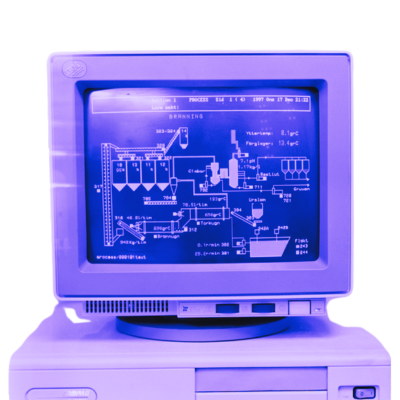
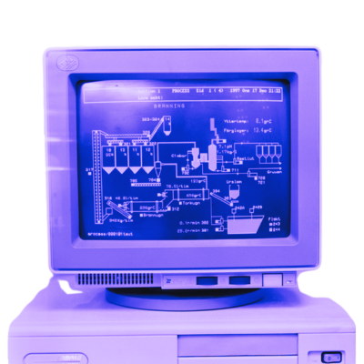
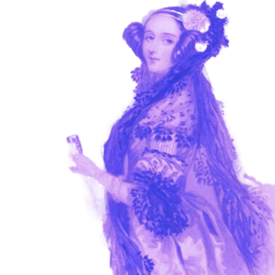
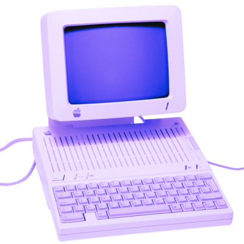
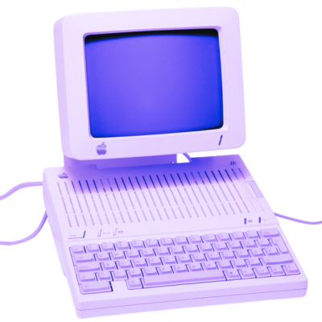
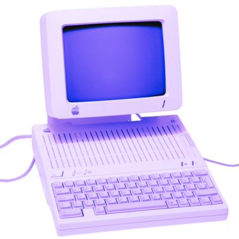
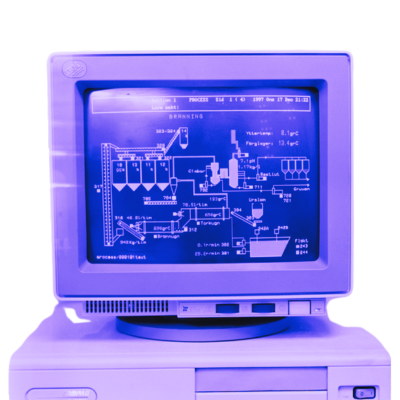
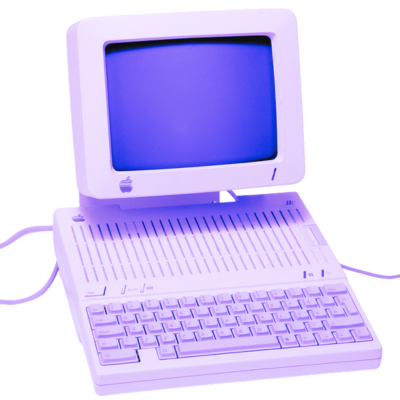

 




Ada was the first programmer
This digital experience explores Ada Lovelace Byron’s heritage through an interactive, multimedia collage to sustain cultural heritage through innovative digital practices.
All images have been digitally modified to achieve a unique design aesthetic, but they all originate from Europeana’s digital archive allowing the visitors to experience visual cultural heritage in a re-imagined form that makes it easier to make Ada’s legacy resonate with the postmodern audience.
By blending technology, creativity and history, this project aims to inspire students, educators,and researchers to continue the spirit of creative innovation that Ada advocated.